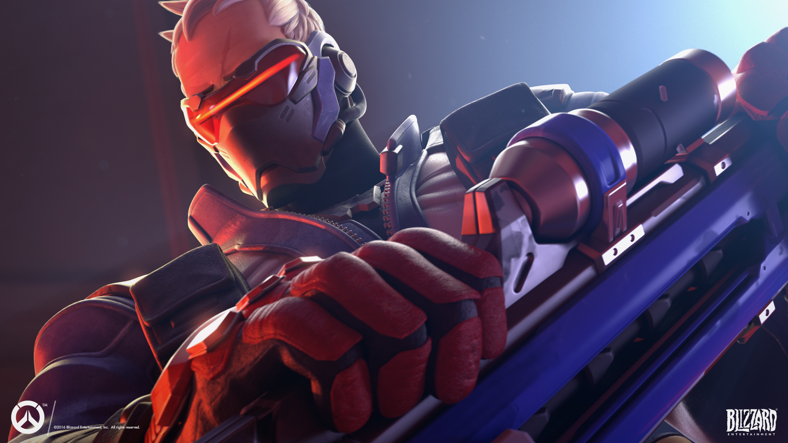
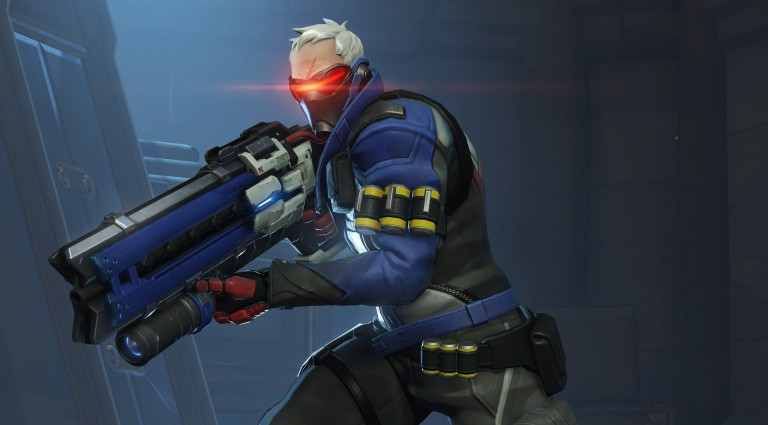

Le fusil à impulsions entièrement automatique du soldat : 76 reste particulièrement stable lorsque ce dernier vide son chargeur.
Le fusil à impulsions du soldat : 76 tire plusieurs petites roquettes à la fois. L’explosion des roquettes inflige des dégâts aux ennemis dans une petite zone.
Qu’il ait besoin de fuir les tirs ennemis ou de revenir au combat rapidement, le soldat : 76 peut foncer droit devant lui. Toute action autre qu’une course vers l’avant met fin à son Sprint.
Le soldat : 76 pose au sol un émetteur biotique. L’énergie ainsi projetée soigne 76 et ses équipiers qui se trouvent dans le champ d’action.
La visière tactique de localisation du soldat : 76 « verrouille » la menace la plus proche de son viseur. Si un ennemi quitte son champ de vision, le soldat : 76 peut rapidement changer de cible.